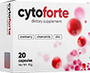
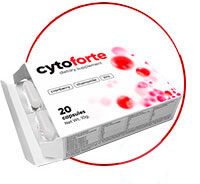

La cistite è un problema frequente e comune nelle donne. Solo in Italia, ogni anno vengono registrati circa 26-36 milioni di casi di questa malattia. A causa della struttura fisiologica del corpo (l'uretra corta e larga predispone alla penetrazione di microrganismi), le donne soffrono di cistite fino a 30 volte più spesso degli uomini. Secondo le statistiche, una donna su quattro soffre di questa malattia almeno 6 volte nel corso della vita, il 32% soffre di cistite cronica.
ANCORA UNA VOLTA HAI DOLORI FORTI?

cytoforte
Un colpo vincente contro
la cistite e i suoi sintomi
I PRINCIPALI SINTOMI DELLA CISTITE ACUTA

La cistite è un processo infiammatorio nella mucosa vescicale.
Nella maggior parte dei casi, la
cistite ha una natura infettiva. La causa principale della cistite (fino all’80%) è il batterio
Escherichia coli, E. coli.
I batteri entrano nella vescica attraverso l'uretra dalle sorgenti di infezione che si trovano sotto:
la vagina (vulviti e vaginiti di diversa eziologia) e l’intestino (come conseguenza del mancato rispetto
delle regole di igiene personale, l’igiene intima non corretta).
L’alta prevalenza di cistite nelle
donne è dovuta alle caratteristiche anatomiche del loro apparato genito-urinario.
L'uretra nelle donne è più corta e più larga, motivo per cui è molto più facile per i batteri
spostarsi verso l'alto.
I sintomi clinici di cistite nelle donne sono più evidenti quando si tratta
di un processo acuto.
I sintomi della cistite cronica di solito non sono molto evidenti: la loro
intensità è meno pronunciata, appaiono e scompaiono da soli.
NIENTE DI INUTILE in CytoForte. Senza antibiotici. Senza componenti artificiali
-

-
Estratto di mirtillo di palude
-
 Estratto di camomilla
Estratto di camomilla -
 Zinco
Zinco -
Vitamina E
-
 Vitamine del gruppo B
Vitamine del gruppo B
Estratto di mirtillo di palude: ha proprietà battericide e distrugge le cellule degli agenti patogeni E. coli
Estratto di camomilla: favorisce il rilassamento muscolare nell’uretere, alleviando rapidamente il dolore
Zinco: rigenera le cellule danneggiate dall'infezione e il tessuto della mucosa
Vitamina E: previene i processi infiammatori nel corpo e ripristina il sistema genito-urinario
Vitamine del gruppo B: producono anticorpi che sopprimono i microrganismi patogeni nel corpo
Scorri verso il basso per saperne di più
cyto forte È UNA COMBINAZIONE OTTIMAMENTE BILANCIATA DI INGREDIENTI ACCURATAMENTE SELEZIONATI
-

1 prodotto = 2 azioni
2 in 1 -

Respinge i microrganismi patogeni
-

Protegge il tratto urinario
L'AZIONE DEI COMPONENTI È FINALIZZATA ALL'ELIMINAZIONE DELLA CAUSA PRINCIPALE DELLE INFEZIONI DEL TRATTO URINARIO, AL RAPIDO ALLEVIAMENTO DEI SINTOMI E ALLA PREVENZIONE DELLE RECIDIVE DELLA MALATTIA IN FUTURO
La formula bioattiva di CytoForte cura la cistite in 8 passi
- IMPEDISCE L'ATTACCAMENTO DEI BATTERI ALLE CELLULE UROTELIALI 1
- DEFORMA LA CELLULA BATTERICA 1
- DANNEGGIA LA FIMBRIA DEI BATTERI E BLOCCA LA SUA SINTESI 1
- PREVIENE LA FORMAZIONE DI BIOFILM BATTERICI 2
- FAVORISCE L’ELIMINAZIONE DI BATTERI DAL TRATTO URINARIO 1
- INFLUENZA L'ACIDITÀ DELL'URINA:
NORMA - AMBIENTE ACIDO (pH = 7) - AIUTA A SORPRENDERE L'INFEZIONE NELLE VIE URINARIE
- AUMENTA LA RESISTENZA DEL CORPO ALLE INFEZIONI, RAFFORZANDO IL SISTEMA IMMUNITARIO

Fabio Vincenzini
Medico urologo, specialista in Scienze mediche
Consiglio ai miei pazienti con la cistite di non indossare la biancheria intima sintetica
stretta e scomoda. Il secondo consiglio è il riposo a letto, se possibile. Il terzo consiglio, il
più importante è prendere l’integratore alimentare biologico
CytoForte.
Al momento, è l'unico farmaco ad azione rapida assolutamente privo di effetti collaterali. Bastano solo 17 minuti dopo l'assunzione di CytoForte, per liberarsi dei fastidiosi sintomi della malattia. Un trattamento mensile dell’integratore alimentare biologico previene le recidive della malattia L’alta efficienza di CytoForte è dovuta ad un enorme complesso di sostanze attive e naturali, a cui i batteri patogeni della cistite non sviluppano resistenza. Il prodotto elimina efficacemente gli organismi patogeni nell’apparato genito-urinario e spiacevoli sintomi della malattia. Durante gli studi clinici è stato scoperto: un trattamento mensile con l’integratore alimentare biologico assicura l'eliminazione di batteri E. Coli nel 98% dei casi e previene le recidive della malattia in futuro .
LA CONFEZIONE di CytoForte CONTIENE 20 CAPSULE
-

20 capsule in un'unica confezione
20 capsule
-

Una al mattino , una prima di coricarsi
2 capsule al giorno
-

Ciclo consigliato: 30 giorni
3 confezioni
Poiché i componenti vegetali di CytoForte non contribuiscono alla formazione della resistenza dei batteri, si può assumere l’integratore alimentare per un lungo periodo di tempo (fino a 1 mese) e poi, in caso di necessità, ripetere il trattamento più volte durante l'anno.
Come prendere CytoForte:
-
2 caps./ giorno PER ALMENO 1 MESEDOPO LA TERAPIA DELLE ITU*
CON ANTIBIOTICI -
2 caps./ giorno PER ALMENO 1 MESENEL CASO DI FREQUENTI RECIDIVE DELLE ITU*
(>3 ATTACCHI DURANTE L'ANNO) -
1 caps./ giorno PER ALMENO 1 MESECON IL RISCHIO ELEVATO DI
SVILUPPO DELLE ITU*
I COMPONENTI DEL PRODOTTO CONTRIBUISCONO A RAFFORZARE LA PROTEZIONE ANTIMICROBICA E "ASSICURARE" LE RECIDIVE DELLE ITU*
* INFEZIONI DEL TRATTO URINARIO
Le indicazioni per l'eventuale assunzione di CytoForte sono: il periodo dopo la terapia antibiotica di infezioni delle vie urinarie, in caso di frequenti ripetuti episodi di infezioni delle vie urinarie, il periodo di maggiore rischio di loro sviluppo a causa di fattori sfavorevoli (cambiamenti stagionali, clima troppo caldo/umido, ipotermia, stress, viaggi, scarse condizioni igieniche).
HANNO GIÀ VISTO CytoForte IN AZIONE
Il 98% dei compratori consigliano di acquistare il prodotto

La cosa principale durante un attacco di cistite è l’assunzione di
cytoforte e l’astinenza sessuale. Se attenersi a queste regole, è possibile sbarazzarsi di sintomi
tanto spiacevoli. Non capisco le persone che prendono sempre gli antibiotici, quando c'è un analogo
di origine vegetale così efficace. A proposito, non cercate di curarvi con degli scaldini che, al
contrario, creeranno un ambiente favorevole per i batteri.
Luciana R. 34 anni

Non avrei mai pensato di trovare qualcosa di utile su Internet.
Quando ho avuto la cistite per l’ennesima volta, ho iniziato a cercare nuovi trattamenti per la
cistite e ho trovato CytoForte. Non dico che mi ha aiutato subito, ma il rimedio ha mostrato la sua
efficacia. Il giorno dopo, i dolori durante la minzione sono scomparsi completamente. Vorrei
sottolineare che non ho avuto la ricaduta neanche dopo sei mesi. Anche se mi è stata diagnosticata
una forma cronica della malattia.
Luisa O. 37 anni

Ha un effetto davvero rapido! Ho avuto la pielonefrite cronica,
veniva sempre appena mi ammalo un po’ o lavoro troppo. La curavo senza successo per quasi 4 anni con
antibiotici e rimedi popolari. Ho provato di tutto ma non ho visto netti miglioramenti. Su consiglio
del mio medico, l'anno scorso ho fatto il trattamento con CytoForte e ho sconfitto la malattia. Da
allora, ho dimenticato di lei. Ora consiglio questo rimedio a tutti.
Isabella F. 44 anni